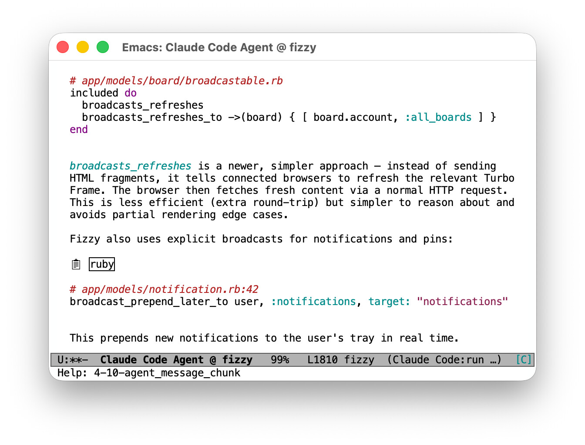

How I Talk to Books and Source Code
Published 2026-01-07
Intro
Staying current in your expertise is challenging when technology evolves rapidly and covers so much more ground than any developer can use in their daily work. Lately, I've found an approach that works really well for me: I'm using Claude Code to have interactive conversations with both comprehensive technical books and production codebases simultaneously, combining the breadth of formal documentation with the depth and concreteness of real-world implementations.
The approach itself is technology-agnostic – it works wherever you have access to both quality documentation and real-world code.
In this post, I'll demonstrate this approach in the context of the Ruby on Rails framework, where I've been working for 15 years and consider myself an expert. Still, Rails offers such a broad feature set that even experienced developers need efficient ways to catch up on new releases – my recent focus on backend work meant Rails 8's frontend tooling and updates around Turbo and Hotwire were unfamiliar territory that I wanted to explore.
Approach
As my working material, I choose Sam Ruby's book "Agile Web Development with Rails 8" and the source code of Basecamp's Fizzy application.
The book is an engaging, comprehensive 480-page guide covering all aspects of Rails 8. It's an excellent book – check it out if you haven't! Fizzy is an open-source Rails 8 application from Basecamp, the creators of Rails. Their codebases are known for being well-crafted and idiomatic, which makes Fizzy a great resource to study.
The basic idea of my approach is straightforward: Claude Code acts as an interactive, personal guide through the book while simultaneously pulling relevant examples from Fizzy's codebase.
To set things up, I clone the Fizzy repository and create a /book directory inside it.
I place the book's PDF and custom instructions for Claude Code there, then reference these instructions in Fizzy's existing CLAUDE.md file.
On first run, Claude Code extracts the book's content from the PDF to a plain text file and generates an outline from that.
Each chapter and section gets a TODO, DONE or SKIP keyword for tracking progress.
This outline serves as both roadmap and record, letting Claude Code orient itself when I start a new session.
With that out of the way, I'm ready to work through the book section by section. Claude Code presents a quick list of key concepts for each section, and I pick what interests me. When Claude Code recognizes a section might not be relevant to my experience level, it says so and highlights which specific Rails 8 details are actually new. For each picked item, Claude Code explains it in detail, highlights differences from earlier Rails versions, and finds relevant examples in Fizzy's codebase. I stay with one concept until I signal Claude Code to move on, preventing information overload and giving me a chance to ask questions.
For example, when the book mentioned Thruster, I went on a tangent to discuss its differences from Nginx, deployment options, and how it's set up in Fizzy.
Also, more often than not, digging into the codebase uncovers gems that I'd have missed otherwise: "Wait, what's that uuid suffix in the fixture identifiers you just showed?How does that work?".
For me, this is where the magic happens: being able to drive these conversations makes me feel like I'm on a treasure hunt of some sorts, and I stay engaged and motivated to keep going through the material.
Finally, after each item, Claude Code updates the outline with discussion notes and code references.

Figure 1: Claude Code in action via agent-shell (Emacs)
It took a fair bit of experimentation to get Claude Code to behave as described above – if you're interested in the details, download the custom instructions and check them out. In case these instructions look overly verbose to you, that's because they are: I asked Claude to improve my initial version and it turns out, Claude can talk to itself more effectively than I can.
Closing Thoughts
I feel like I've hit a usecase for AI that really fits its superpowers – consuming, not creating. This workflow cut my learning time dramatically while helping me retain more than I would from passive reading. I'm already applying it to other areas where I need to stay current, and I'm eager to see what else it unlocks.
If you've experimented with similar workflows, I'd love to hear about them. And if you try out my approach, I'm particularly interested in feedback on the custom instructions. There's surely room for improvement, and I'd welcome ideas on how to make them more effective.
As always, if you find any of this useful or have thoughts to share, feel free to reach out!